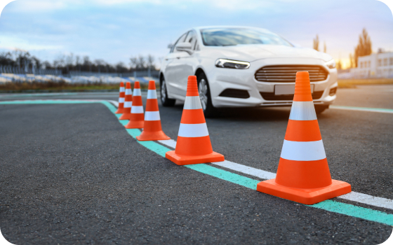
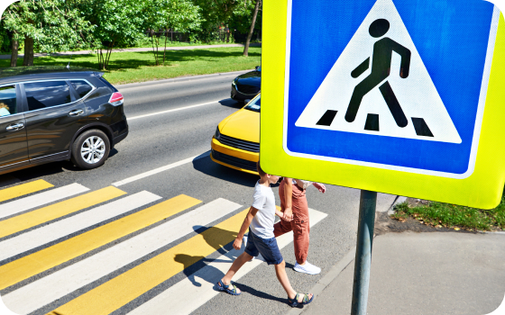

Программистов, которые закончили университет, а также поработали по специальности 3-5 лет
Узнать большеМы с Радостью Делимся Опытом и Проверенной Информацией
Нормативные акты
Организации дорожного движения
-
Международные акты
- Решение Комиссии Таможенного союза о принятии технического регламента Таможенного союза «Безопасность автомобильных дорог» (с изменениями на 12 октября 2015 года)
-
Федеральные законы
- Федеральный закон от 21.12.2021 № 414-ФЗ «Об общих принципах организации публичной власти в субъектах Российской Федерации» (с изм. И доп., вступ. в силу с 11.01.2023)
- Федеральный закон от 29.12.2017 № 443-ФЗ «Об организации дорожного движения в Российской Федерации и о внесении изменений в отдельные законодательные акты Российской Федерации»
- Федеральный закон от 13.07.2015 № 218-ФЗ «О государственной регистрации недвижимости» (с изм. и доп., вступ. в силу с 11.01.2023)
- Федеральный закон от 08.11.2007 № 257-ФЗ «Об автомобильных дорогах и о дорожной деятельности в Российской Федерации и о внесении изменений в отдельные законодательные акты Российской Федерации» (с изм. и доп., вступ. в силу с 11.01.2023)
- Кодекс Российской Федерации об административных правонарушениях от 30.12.2001 № 195-ФЗ (ред. От 27.01.2023) Глава 12.
- Федеральный закон от 10.12.1995 № 196-ФЗ «О безопасности дорожного движения» (с изм. от 27.10.2022)
-
Указы Президента
- Указ Президента РФ от 15 июня 1998 г. № 711 «О дополнительных мерах по обеспечению безопасности дорожного движения» (с изменениями и дополнениями)
-
Постановления Правительства
- Постановление Правительства РФ от 30 июня 2021 г. № 1101 «Об утверждении Положения о федеральном государственном контроле (надзоре) в области безопасности дорожного движения и признании утратившими силу некоторых актов Правительства Российской Федерации и отдельных положений некоторых актов Правительства Российской Федерации»
- Постановление Правительства РФ от 21.12.2020 № 2200 (ред. от 30.12.2022) «Об утверждении Правил перевозок грузов автомобильным транспортом и о внесении изменений в пункт 2.1.1 Правил дорожного движения Российской Федерации»
- Постановление Правительства РФ от 23.10.1993 № 1090 (ред. от 31.12.2020) «О Правилах дорожного движения» (вместе с «Основными положениями по допуску транспортных средств к эксплуатации и обязанности должностных лиц по обеспечению безопасности дорожного движения») (с изм. и доп., вступ. в силу с 01.01.2022)
-
ГОСТы и иные технические нормативы
- ГОСТ Р 58350-2019 «Дороги автомобильные общего пользования. Технические средства организации дорожного движения в местах производства работ. Технические требования. Правила применения» (с Изменением № 1)
- ГОСТ Р 52289-2019 Технические средства организации дорожного движения. Правила применения дорожных знаков, разметки, светофоров, дорожных ограждений и направляющих устройств (с Поправками) – Применяется с 01.04.2020 взамен ГОСТ Р 52289-2004.
- ГОСТ Р 51256-2018 Технические средства организации дорожного движения. Разметка дорожная. Классификация. Технические требования (с Изменением № 1)
- ГОСТ Р 57145-2016 Специальные технические средства, работающие в автоматическом режиме и имеющие функции фото- и киносъемки, видеозаписи, для обеспечения контроля за дорожным движением. Правила применения.
- ГОСТ Р 57144-2016 Специальные технические средства, работающие в автоматическом режиме и имеющие функции фото- и киносъемки, видеозаписи, для обеспечения контроля за дорожным движением. Общие технические требования (с Поправкой)
- ГОСТ Р 56057-2014 Системы светооптические светодиодные для железнодорожной светофорной сигнализации. Общие технические требования и методы испытаний.
- ГОСТ 33150-2014 Дороги автомобильные общего пользования. Проектирование пешеходных и велосипедных дорожек. Общие требования (Переиздание)
- ГОСТ Р 54984-2012 Освещение наружное объектов железнодорожного транспорта. Нормы и методы контроля.
- ГОСТ Р 52605-2006 Технические средства организации дорожного движения. Искусственные неровности. Общие технические требования. Правила применения (с Изменением № 1)
- ГОСТ Р 52290-2004 Технические средства организации дорожного движения. Знаки дорожные. Общие технические требования (с Поправками, с Изменениями № 1, 2, 3)
- ГОСТ Р 50597-93 «Автомобильные дороги и улицы. Требования к эксплуатационному состоянию, допустимому по условиям обеспечения безопасности дорожного движения» (принят постановлением Госстандарта РФ от 11 октября 1993 г. № 221) – Приказом Росстандарта от 26 сентября 2017 г. № 1245-ст взамен настоящего ГОСТа с 1 июня 2018 г. введен в действие ГОСТ Р 50597-2017 «Дороги автомобильные и улицы. Требования к эксплуатационному состоянию, допустимому по условиям обеспечения безопасности дорожного движения. Методы контроля» для добровольного применения в РФ.
- СП 59.13330.2020 Доступность зданий и сооружений для маломобильных групп населения СНиП 35-01-2001 (с Изменением №1)
- СП 52.13330.2016 Естественное и искусственное освещение. Актуализированная редакция СНиП 23-05-95 (с Изменением № 1)
- ОСТ 218.1.002-2003 Автобусные остановки на автомобильных дорогах. Общие технические требования.
- СНиП 3.05.06-85 Электротехнические устройства
- СНиП 2.05.02-85 Автомобильные дороги (с Изменениями № 2-5)

Длинное Название статьи в ДВЕ СТРОКИ. Длинное Название статьи в ДВЕ СТРОКИ
Технические средства организации дорожного движения. Правила применения дорожных знаков, разметки, светофоров, дорожных ограждений и направляющих устройств. Технические средства организации дорожного движения. Технические средства организации дорожного движения. Правила применения дорожных знаков, разметки, светофоров, дорожных ограждений и направляющих устройств.
Технические средства организации дорожного движения. Правила применения дорожных знаков, разметки, светофоров, дорожных ограждений и направляющих устройств. Технические средства организации дорожного движения. Технические средства организации
Узнать большеДлинное Название статьи в ДВЕ СТРОКИ. Длинное Название статьи в ДВЕ СТРОКИ
Технические средства организации дорожного движения. Правила применения дорожных знаков, разметки, светофоров, дорожных ограждений и направляющих устройств. Технические средства организации дорожного движения. Технические средства организации дорожного движения. Правила применения дорожных знаков, разметки, светофоров, дорожных ограждений и направляющих устройств.
Технические средства организации дорожного движения. Правила применения дорожных знаков, разметки, светофоров, дорожных ограждений и направляющих устройств. Технические средства организации дорожного движения. Технические средства организации
Узнать больше

Длинное Название статьи в ДВЕ СТРОКИ. Длинное Название статьи в ДВЕ СТРОКИ
Технические средства организации дорожного движения. Правила применения дорожных знаков, разметки, светофоров, дорожных ограждений и направляющих устройств. Технические средства организации дорожного движения. Технические средства организации дорожного движения. Правила применения дорожных знаков, разметки, светофоров, дорожных ограждений и направляющих устройств.
Технические средства организации дорожного движения. Правила применения дорожных знаков, разметки, светофоров, дорожных ограждений и направляющих устройств. Технические средства организации дорожного движения. Технические средства организации
Узнать большеДлинное Название статьи в ДВЕ СТРОКИ. Длинное Название статьи в ДВЕ СТРОКИ
Технические средства организации дорожного движения. Правила применения дорожных знаков, разметки, светофоров, дорожных ограждений и направляющих устройств. Технические средства организации дорожного движения. Технические средства организации дорожного движения. Правила применения дорожных знаков, разметки, светофоров, дорожных ограждений и направляющих устройств.
Технические средства организации дорожного движения. Правила применения дорожных знаков, разметки, светофоров, дорожных ограждений и направляющих устройств. Технические средства организации дорожного движения. Технические средства организации
Узнать больше
Любой заголовок в две строки
Любой заголовок в две строки
Программистов, которые закончили университет, а также поработали по специальности 3-5 лет
Узнать больше
Любой заголовок в две строки
Программистов, которые закончили университет, а также поработали по специальности 3-5 лет
Узнать больше
Любой заголовок в две строки
Программистов, которые закончили университет, а также поработали по специальности 3-5 лет
Узнать больше
Любой заголовок в две строки
Программистов, которые закончили университет, а также поработали по специальности 3-5 лет
Узнать больше
Любой заголовок в две строки
Программистов, которые закончили университет, а также поработали по специальности 3-5 лет
Узнать больше